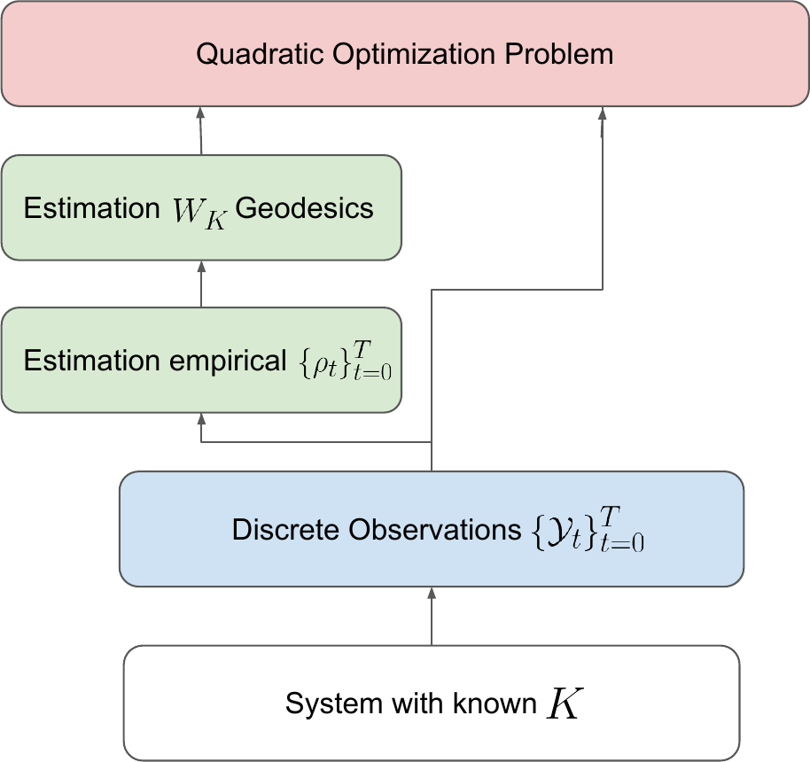
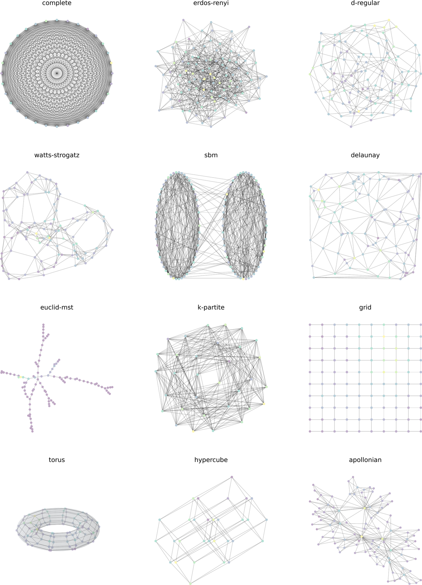
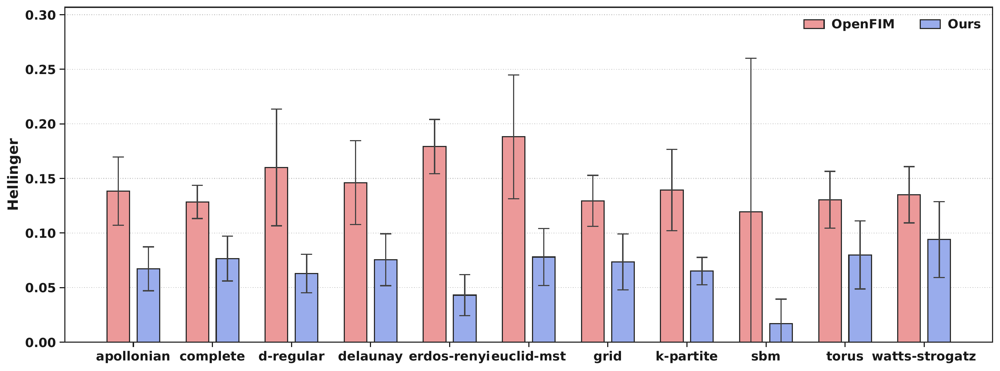
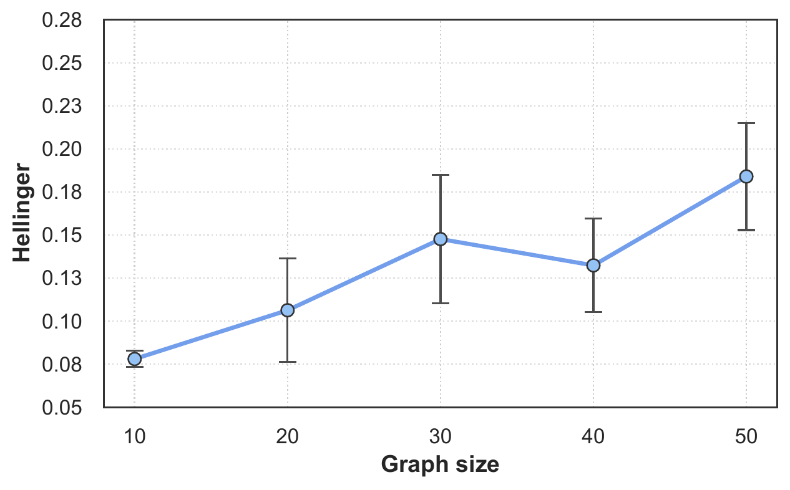

Learning Discrete Diffusion on Graphs via Free-Energy Gradient Flows
A discrete Jordan–Kinderlehrer–Otto scheme that recovers the free-energy functional behind diffusion on a graph from temporal snapshots
Continuous diffusion models can be understood as gradient flows of free-energy functionals in the Wasserstein-2 geometry, learned through the Jordan–Kinderlehrer–Otto (JKO) scheme. On discrete spaces this picture breaks down: any non-constant curve of probability distributions has infinite Wasserstein-2 metric derivative, so processes such as the discrete heat equation cannot be a Wasserstein-2 gradient flow of any functional. This work introduces the first computational method that repairs the analogy. Working in the metric W_K that the Markov kernel K induces on the simplex, it interprets standard discrete diffusion paths as gradient flows of free-energy functionals, and recovers the underlying functional from temporal snapshots by imposing the first-order optimality conditions of a discrete JKO step. The resulting method optimizes a simple quadratic loss, trains in well under a minute, needs no individual sample trajectories, and requires only a numerical preprocessing step that computes W_K-geodesics. On synthetic benchmarks spanning twelve graph classes it recovers the underlying functional and outperforms a recent Markov-jump-process foundation model with far fewer parameters.
Why discrete diffusion needs a different geometry
A large family of diffusion-based methods models the evolution of a population as a trajectory of probability measures in a metric space. The engine behind many of them is the proximal step introduced by Jordan, Kinderlehrer and Otto (Jordan et al. 1998),
p_{t+1} := \underset{p \in \mathcal{P}(\mathbb{R}^n)}{\arg\min} \left\{ \mathcal{F}(p) + \frac{1}{2\tau}\, W_2(p, p_t)^2 \right\},
which solves a proximal problem in the Wasserstein-2 (W_2) geometry under a functional \mathcal{F}. The celebrated consequence is that certain PDEs — the Fokker–Planck equation among them — are exactly the W_2 gradient flow of a free-energy functional, the sum of a potential and an entropic term. This variational view is also practically attractive: models built on it train fast and operate directly at the sample level, with no need for trajectory-level observations (Bunne et al. 2022; Terpin et al. 2024).
In parallel, probability flows on discrete spaces have become central to language modelling, molecule generation, and machine learning for the material sciences (Lou et al. 2024; Campbell et al. 2022). These models evolve a discrete distribution under a known Markov kernel K. Yet a direct port of the JKO framework fails here.
The breaking point is sharp even on a two-point space \mathcal{X} = \{a, b\}: for the discrete heat equation started from any non-invariant density, the paper shows |\dot{p}_t| = +\infty for all t \ge 0. So the heat equation is the W_2-gradient flow of no functional, and one must change the metric.
The object that refuses to fit is the discrete heat equation
\frac{\mathrm{d}}{\mathrm{d}t}\,\rho_t = (K - I)\,\rho_t,
the most widely used process in discrete generative applications. To describe it as a gradient flow at all, one has to abandon W_2.
The fix: gradient flows in the W_K metric
The repair draws on a body of pure-mathematics work on probability gradient flows over discrete spaces (Maas 2011). Those works replace W_2 with a different metric W_K, built from the Markov kernel K through a discrete analogue of the Benamou–Brenier formula (Benamou and Brenier 2000). In the geometry induced by W_K, important discrete trajectories — the discrete heat equation included — do arise as gradient flows of free-energy functionals, restoring the continuous analogy.
1 The setting is deliberately weak: one observes only temporal snapshots along an unknown trajectory, not the ground-truth noising process. This is the assumption that continuous gradient-flow methods make, ported to the discrete case.
These constructions were developed for theoretical purposes and had seen almost no computational adoption (Erbar et al. 2017). The paper’s contribution is to translate them into a practical, implementable method: a principled discrete analogue of the JKO scheme that learns the functional behind a diffusion from its trajectory.1
The learning principle is the first-order necessary condition of optimality for a discrete JKO step. Imposing it turns functional recovery into a quadratic loss whose only prerequisite is the ability to compute geodesics in W_K — for which the paper builds a dedicated numerical routine. The training loop is correspondingly light: it optimizes a simple quadratic objective, trains extremely fast, needs no individual sample trajectories, and only requires the W_K-geodesic preprocessing step.

Experimental setup
The method is evaluated on controlled synthetic discrete-diffusion tasks where the underlying graph and free-energy functional are known. The architecture is deliberately simple: a two-hidden-layer MLP with 64 neurons per layer, with one head predicting the discrete gradient \nabla V_\theta and a one-dimensional head estimating a global noise parameter \beta_\theta. Models are trained for two epochs at batch size 128 on a single L40S GPU; a single epoch takes on the order of tens of seconds for moderate graph sizes.
Performance is measured with the Hellinger distance between the ground-truth probabilities and those estimated from samples, following the protocol of OpenFIM (Berghaus et al. 2025), reported as the time-averaged \tfrac{1}{T}\sum_{t=0}^{T} H(p^t, q^t). The benchmark spans a collection of synthetic graph classes with varied sparsity and structure.

Results against the baseline
The comparison is against OpenFIM (Berghaus et al. 2025), a recent foundation model that predicts Markov jump processes zero-shot. To keep the comparison in-distribution, the evaluation is restricted to graphs of size at most six, matching OpenFIM’s pretraining regime. For each configuration the potential V is sampled in [-1, 1] and the noise parameter \beta \in \{0.01, 0.1, 0.2\}, with 10,000 samples per run and five independent graph instances per configuration.
Across all graph classes and noise levels the method outperforms OpenFIM with a clear margin (Figure 3), aggregated by \beta in Table 1.

| \beta | Ours | OpenFIM |
|---|---|---|
| \beta = 0.01 | 0.066 \pm 0.031 | 0.142 \pm 0.048 |
| \beta = 0.10 | 0.059 \pm 0.029 | 0.150 \pm 0.061 |
| \beta = 0.20 | 0.069 \pm 0.031 | 0.159 \pm 0.097 |
This margin is achieved with a substantially simpler architecture: for graphs of size N = 6, the model typically has on the order of 10k parameters, and trains in under one minute against several hours of pretraining for OpenFIM. The authors read this as evidence that explicitly leveraging the gradient-flow structure is an effective and lightweight route to learning discrete stochastic dynamics.
How performance scales
Two ablations probe robustness. Increasing graph size N \in \{10,20,30,40,50\} (averaged across classes) produces a gradual, roughly linear degradation in Hellinger distance (Figure 4) — consistent with the growing dimensionality of the simplex and the harder optimization problem. The authors also note occasional optimization instabilities at larger sizes, with around 1.5% of learned distributions collapsing onto a single vertex; the present study focuses on stable runs, and these failures are easy to flag from the constancy of the predicted states.
Varying the number of samples in \{500, 1000, 2000, 5000, 10000\} at fixed size N = 10 leaves performance largely flat once a moderate threshold is reached; only the smallest size (500) degrades slightly, attributed to higher variance in the empirical density estimate \hat{\rho}. The objective operates on N-dimensional density estimates rather than on individual samples.

Scope and outlook
The framework makes a weaker assumption than CTMC-based generative models: it observes only temporal snapshots along an unknown trajectory, with no access to the ground-truth noising process. That mismatch is a computational tradeoff rather than a conceptual limit — without the ground-truth process it cannot use conditional score-matching reductions, and instead estimates densities from snapshots and recovers joint, score-like quantities through the W_K geometry. This is why the paper does not run large-scale sequence-generation experiments: in language-style settings the state space is a Hamming graph with n^d vertices, where joint density estimation from snapshots is not viable. The conceptual link to discrete diffusion is preserved — for relative entropy, the W_K gradient satisfies \mathrm{grad}\,\mathcal{H}(\rho) = \nabla \log \rho, the same log-ratio structure that appears in time reversal of the heat equation. Integrating this machinery with state-of-the-art discrete diffusion models is left to future work.
In sum, the paper supplies a discrete counterpart to the JKO picture: a concise synthesis of the underlying mathematical theory, a numerical geodesic estimator, and a quadratic-loss training routine that imposes first-order optimality. Across graph classes and regimes it recovers the underlying functional and outperforms existing Markov-jump-process baselines while remaining favorable in training time, parameter count, and scaling. A copyable BibTeX entry for this page is generated automatically below.
Citation
@inproceedings{rancati2026,
author = {Rancati, Dario and Maas, Jan and Locatello, Francesco},
title = {Learning {Discrete} {Diffusion} on {Graphs} via {Free-Energy}
{Gradient} {Flows}},
booktitle = {Proceedings of the 43rd International Conference on
Machine Learning (ICML)},
date = {2026-04-13},
url = {https://arxiv.org/abs/2604.11311}
}